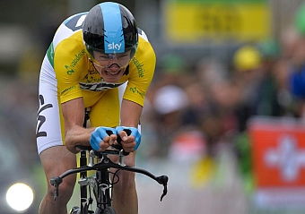
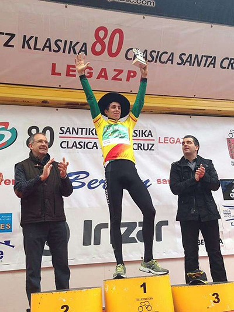

Un cuarentón triunfa en la Titan
DEHO LOGRÓ SU SEGUNDA VICTORIA DE ETAPA
Marzio Deho logró en Merzouga su segundo triunfo de etapa en la Milenio Titan Desert by GAES 2013, con el mérito añadido de superar cuatro pinchazos. El italiano, de 44 años, campeón de la categoría Master de la prueba en años anteriores, aprovechó el marcaje de Pinto y Ramos y fue el más rápido en la escapada del día.
Froome gana el Tour de Romandia

El británico Christopher Froome (Sky Procycling) se adjudicó la Vuelta a Romandia tras disputarse la quinta y última etapa, una contrarreloj individual de 18,7 kilómetros que tuvo por escenario las calles de Ginebra.Grijabla gana la Copa de España

El joven ciclista vallisoletano, Fernando Grijalba, se ha proclamado vencedor de la Copa de España. Grijalba lo consigue siendo además sub23, los dos anteriores que lo lograron fueron Fran Moreno en 2011 con el Caja Rural-Seguros RGA y Alejandro Valverde.La AMA estudia la posibilidad de recurrir la sentencia "Destruir todas las bolsas de sangre es decepcionante e insatisfactoria para la AMA y la comunidad de la lucha antidopaje", dice el director general de la AMA.La juez condena a Eufemiano, pero ordena destruir las bolsas Castigó al canario a un año de cárcel y a Labarta a cuatro meses. Absolvió a Saiz, Belda y Yolanda Fuentes. Y denegó la indemnización a Manzano.Ezquerro: "Nunca me había tenido que esforzar tanto" El exfutbolista trata de completar la Titan Desert, una experiencia "al límite", aunque más lo será la "casi imposible" remontada del Barça en Champions.
Urán: "Con Wiggins de líder, mi mentalidad será diferente" Rigoberto Urán será uno de los hombres de máxima confianza de Bradley Wiggins en el Team Sky del Giro de Italia que comienza el sábado. El ciclista colombiano afrontará la carrera rosa con "una mentalidad diferente" a la del año pasado cuando acabó séptimo y fue el mejor joven. Asume su rol de gregario sin dudarlo con el objetivo de apoyar y ayudar a su líder hasta lo más alto del podio en Brescia.La revolución Astana llega a Italia Quieren que sea su Giro. Astana piensa en objetivos mayúsculos para la Corsa 2013 que arranca el sábado en Nápoles. Tras sus últimas grandes actuaciones, Vicenzo Nibali será uno de los principales candidatos para terminar ataviado de rosa en Brescia. Su nombre aparece en todas las quinielas junto al de Bradley Wiggins. Los kazajos aterrizan conjurados para demoler el predominio de los Sky.El Papa Francisco bendice la 'maglia' rosa del Giro 2013 El maillot se entrega al campeón de la competición, que comenzará el próximo sábado 4 de mayo en la ciudad de Nápoles y finalizará el 26 en Brescia, tal y como ha confirmado la organización de la prueba.

 Ciclismo
Ciclismo